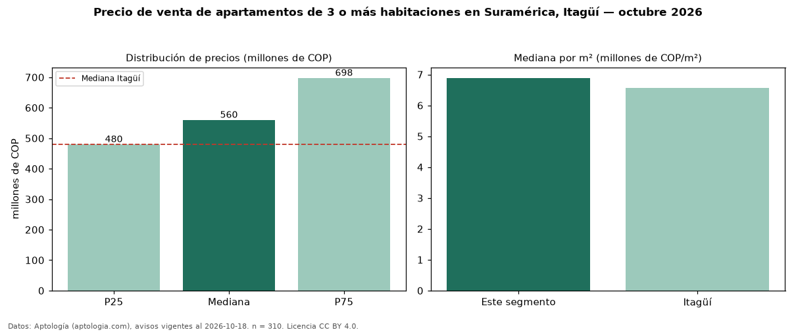

Precio de venta de apartamentos de 3 o más habitaciones en Suramérica, Itagüí — octubre 2026
COP 560 millones es el precio mediano de apartamentos de 3 o más habitaciones en venta en Suramérica, Itagüí (n = 310 avisos). Frente a la mediana de Itagüí para apartamentos de 3 o más habitaciones (COP 479 millones), queda 17 % por encima. Por metro cuadrado, la mediana es COP 6,89 millones/m² (n = 310 avisos con área), 5 % por encima de Itagüí (COP 6,57 millones/m²). Son 68 % de los 455 avisos de apartamentos en venta de la zona, cuya mediana general es COP 560 millones (+0 %). Con el precio por m² de arriendo del mismo segmento (COP 38.235/m² al mes), la rentabilidad bruta implícita es 6,7 % anual (aproximación con medianas de ofertas distintas). El área mediana anunciada es 86 m². La administración mediana declarada es COP 450.000 al mes (n = 234). El estrato más frecuente es 4 (90 % de los avisos con estrato). Datos: Aptología (aptologia.com), CC BY 4.0 — https://www.aptologia.com/venta/itagui/suramerica. Archivos: PDF, CSV con las cifras y gráfica PNG.

| Avisos únicos | 310 |
|---|---|
| Percentil 25 | COP 480.000.000 |
| Mediana | COP 560.000.000 |
| Percentil 75 | COP 697.750.000 |
| Mediana por m² | COP 6.889.136 |
Fuente: avisos vigentes de portales inmobiliarios recopilados por Aptología, deduplicados (mínimo 30 avisos únicos por celda). Precios pedidos, no cerrados. Fecha: 2026-10-18.